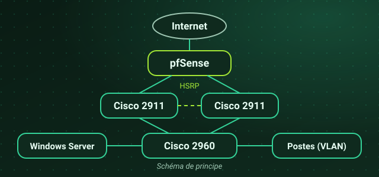

Réseau d'entreprise sur infrastructure Cisco physique
Mise en place d'un réseau segmenté et redondant sur du matériel Cisco physique, avec un pare-feu pfSense et un serveur Windows Server 2022.
DomaineRéseaux
CadreBTS SIO SISR, ISITECH Lyon
MatérielCisco 2911, Cisco 2960
LogicielspfSense CE, Windows Server 2022

Ce que j'ai mis en place
- Segmentation en VLAN sur le switch Cisco 2960, pour séparer les flux des différents services.
- Routage inter-VLAN en router-on-a-stick sur les routeurs Cisco 2911 : une seule liaison trunk 802.1Q portant plusieurs sous-interfaces, une par VLAN.
- HSRP : deux routeurs partagent une adresse de passerelle virtuelle. Si l'un tombe, l'autre prend le relais sans que les postes aient à changer de configuration.
- EtherChannel (LACP) : plusieurs liens physiques agrégés en un seul lien logique, pour plus de débit et de tolérance aux pannes.
- Pare-feu pfSense CE pour filtrer et contrôler les échanges entre les réseaux.
- Serveur Windows Server 2022 pour les services du réseau.
Compétences travaillées
Concevoir, installer, tester et déployer une solution d'infrastructure réseau, puis l'exploiter et la dépanner (Bloc 2 du BTS SIO SISR).